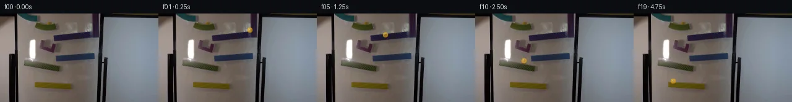

![首帧]()

Round 00
2026-11-05T05:50:26.759575+00:00像素候选变化代码 +182/−0inspection 更新
pixels 50a24302fd4232a7 · code a951d452a040e500
查看本轮 generate.py 真实 diff
--- previous/generate.py
+++ current/generate.py
@@ -0,0 +1,182 @@
+#!/usr/bin/env python3
+"""Generate the 20-frame PixelWorld continuation using local pixel operations."""
+
+from pathlib import Path
+
+import numpy as np
+from PIL import Image, ImageDraw
+
+import artifact_io
+
+
+ROOT = Path(__file__).resolve().parent
+SOURCE = np.asarray(Image.open(ROOT / "first_frame.png").convert("RGB"), dtype=np.uint8)
+
+
+# Measured/modelled marble centers. Frame zero deliberately has no overlay so it
+# is exactly the supplied image. Coordinates are in native 256x144 pixels.
+CENTERS = [
+ None,
+ (148.0, 27.0),
+ (145.0, 28.0),
+ (137.0, 29.7),
+ (125.0, 32.0),
+ (111.0, 34.7),
+ (96.0, 37.6),
+ (85.0, 40.0),
+ (82.7, 50.0),
+ (80.5, 65.5),
+ (79.0, 77.0),
+ (81.0, 78.0),
+ (85.0, 79.5),
+ (91.0, 81.7),
+ (99.0, 84.7),
+ (101.0, 96.0),
+ (101.0, 107.5),
+ (91.0, 108.2),
+ (78.0, 109.1),
+ (64.0, 110.0),
+]
+
+
+def alpha_over(frame: np.ndarray, rgb: np.ndarray, alpha: np.ndarray) -> None:
+ """Alpha-composite a full-frame RGB layer in place."""
+ a = np.clip(alpha, 0.0, 1.0)[..., None]
+ frame[:] = np.clip(frame.astype(np.float32) * (1.0 - a) + rgb * a, 0, 255).astype(np.uint8)
+
+
+def add_shadow(frame: np.ndarray, cx: float, cy: float, kind: str) -> None:
+ """Add a restrained elliptical cast/contact shadow beneath the marble."""
+ yy, xx = np.mgrid[0:144, 0:256]
+ if kind == "upper":
+ sx, sy, rx, ry, strength = cx + 0.4, cy + 4.2, 4.5, 1.45, 0.29
+ elif kind == "middle":
+ sx, sy, rx, ry, strength = cx + 0.3, cy + 4.0, 4.5, 1.40, 0.28
+ elif kind == "lower":
+ sx, sy, rx, ry, strength = cx + 0.2, cy + 3.8, 4.3, 1.25, 0.25
+ elif kind == "fall1":
+ # The first target ramp is around y=81 at the current horizontal position.
+ sx, sy = cx + 0.2, 81.0
+ gap = max(0.0, sy - cy)
+ rx, ry, strength = 3.0 + gap * 0.045, 1.0 + gap * 0.012, 0.08 + 0.12 / (1.0 + gap / 12.0)
+ else: # fall2: target final ramp surface around y=112
+ sx, sy = cx, 112.0
+ gap = max(0.0, sy - cy)
+ rx, ry, strength = 3.0 + gap * 0.045, 1.0 + gap * 0.012, 0.09 + 0.12 / (1.0 + gap / 10.0)
+
+ q = ((xx - sx) / rx) ** 2 + ((yy - sy) / ry) ** 2
+ alpha = strength * np.exp(-2.0 * q)
+ shadow_rgb = np.zeros_like(frame, dtype=np.float32)
+ alpha_over(frame, shadow_rgb, alpha)
+
+
+def add_glass_marble(frame: np.ndarray, cx: float, cy: float, phase: float) -> None:
+ """Rasterize a small translucent yellow glass sphere analytically."""
+ yy, xx = np.mgrid[0:144, 0:256]
+ dx = xx + 0.5 - cx
+ dy = yy + 0.5 - cy
+ radius = 4.15
+ dist = np.sqrt(dx * dx + dy * dy)
+
+ # One-pixel antialias fringe, translucent center, denser glass at the rim.
+ coverage = np.clip(radius + 0.65 - dist, 0.0, 1.0)
+ radial = np.clip(dist / radius, 0.0, 1.0)
+ density = 0.54 + 0.26 * radial**2
+
+ # Warm body illumination: brighter toward the upper left and darker at the
+ # contact side. A subtle rotating inclusion supplies a rolling cue.
… diff truncated; 95 more lines …